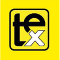
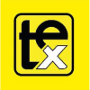

розробка та виготовлення зовнішньої реклами
замовитиПРИДБАТИ ЧИ ЗАМОВИТИ РОЗРОБКУ, ОТРИМАТИ КОНСУЛЬТАЦІЮ - ВСЕ ПО ЗОВНІШНІЙ РЕКЛАМІ В АГЕНЦІЇ "РЕКЛАМА ПОДІЛЛЯ"
Реклама Поділля – агенція в м. Хмельницькому, що розробляє зовнішню рекламу. Здійснює монтаж рекламних конструкцій. Розробляє, починаючи з 3D макета, виготовляє та монтує вивіски від звичайних щитових вивісок, світлових коробів, лайтбоксів світлових, об’ємних вивісок, до складних дахових вивісок, світлових літер, об’ємних букв, літер з різними способами підсвічування.
СЕРТИФІКОВАНІ, ЯКІСНІ МАТЕРІАЛИ ДЛЯ ВИГОТОВЛЕННЯ ЗОВНІШНЬОЇ РЕКЛАМИ
Реклама Поділля, співпрацює з постачальниками лише сертифікованих високоякісних матеріалів, безпечної та якісної електрики, підсвітки, що гарантує високу якість та довговічність зовнішньої реклами.
На всю рекламну продукцію, вивіски, лайтбокси, літери світлові об’ємні, неонові вивіски, банери, штендери, таблички адресні – надається документація, дозволи, та гарантія.
Вигідні ціни
Ми підібрали найдоступніші ціни на вивіски, світлові, фігурні, двосторонні лайтбокси (світловий короб), що дозволять, при цьому, отримати високоякісну зовнішню рекламу розроблену нашими фахівцями.
Також повноцінну гарантію, всі відповідні дозволи та фінансові документи. Постійне сервісне обслуговування. Наш, майже двадцятирічний досвід у сфері зовнішньої реклами з впевненістю дозволяє гарантувати це!
великий спектр послуг
Виготовлення вивіски, лайтбокса, об’ємних літр та загалом зовнішньої реклами в цілому – кропіткий, багатоетапний процес, який в змозі виконати правильно тільки справжні професіонали. Зовнішня реклама – це різноманітність конструкцій, видів і технологій будь-якої складності – лайтбокси, світлові вивіски та світлові букви різного розміру, шрифту, способу підсвітки.
Також ми пропонуємо оформлення фасаду комерційного приміщення.
Наші партнери:


 

РЕКЛАМНІ ПОСЛУГИ. ВИГОТОВЛЕННЯ ЗОВНІШНЬОЇ РЕКЛАМИ
Ми пропонуємо комплексні послуги з виготовлення зовнішньої реклами, починаючи від проєктування і дизайнерської ідеї, закінчуючи втіленням ваших побажань в оригінальних конструкціях. Такий підхід дозволяє нам створювати яскраві, незабутні образи корпоративної індивідуальності.
МИ ГОТОВІ НАДАТИ ВАМ ПОСЛУГИ В НАСТУПНИХ НАПРЯМКАХ:
ДИЗАЙН І ПРОЄКТУВАННЯ ЯК ВАЖЛИВИЙ ЕТАП ВИГОТОВЛЕННЯ ЗОВНІШНЬОЇ РЕКЛАМИ.
Професійні дизайнери нашої компанії створять макет і візуалізацію можливого оформлення ваших об’єктів засобами зовнішньої реклами. 3D-макет дасть змогу чітко зрозуміти який саме зовнішній вигляд буде мати ваша вивіска, і загалом зовнішня реклама.
МОНТАЖ КОНСТРУКЦІЙ ЗОВНІШНЬОЇ РЕКЛАМИ.
Монтаж зовнішньої реклами – це послуга, яка є окремим напрямком роботи й спирається на великий практичний досвід наших фахівців. Ми надаємо весь спектр послуг з монтажу рекламних конструкцій (вивісок, об’ємних літер, банерів, лайт-боксів, дахових установок). Наші фахівці мають дозвіл на висотний монтаж, що особливо актуально для офісних будівель в місті Хмельницький.
ОБСЛУГОВУВАННЯ ТА РЕМОНТ ВИВІСОК, ЗОВНІШНЬОЇ СВІТЛОВОЇ РЕКЛАМИ.
Компанія Реклама Поділля виконує також обслуговування і ремонт рекламних об’єктів. Демонтаж старих вивісок, відновлення і реставрація зовнішньої реклами, заміна і ремонт системи освітлення – ми допоможемо розв’язувати будь-яке питання.
РЕЄСТРАЦІЯ РЕКЛАМНИХ КОНСТРУКЦІЙ.
Реєстрація об’єктів зовнішньої реклами, так само як і виготовлення зовнішньої реклами – клопітка та обтяжлива заняття, що вимагає певних знань і навичок. Фахівці компанії Реклама Поділля допоможуть отримати всю необхідну дозвільну документацію для легального функціонування ваших вивісок, лайт-боксів та інших рекламних конструкцій.
АРХІТЕКТУРНЕ ПІДСВІЧУВАННЯ.
Архітектурна художнє підсвічування – це візитна картка будови. Вона здатна надати йому неповторний вигляд і виділити на тлі інших об’єктів. Ми професійно займаємося архітектурним підсвічуванням будівель, наші роботи ви не раз бачили на вулицях вечірнього міста.
ОФОРМЛЕННЯ ТРАНСПОРТУ.
Наші фахівці подбають про іміджеве або рекламно-інформаційне оформлення транспорту, в залежності від поставлених цілей.Якщо у вас є свій автопарк, ми можемо оформити його в єдиному фірмовому стилі, що буде працювати на підвищення його впізнаваності. При оформленні транспорту ми використовуємо вінілові плівки з зображенням, нанесеним шляхом повноколірного друку з наступним ламінуванням
ВЕСЬ КОМПЛЕКС ВИРОБНИЦТВА ЗОВНІШНЬОЇ РЕКЛАМИ
Також в нашій компанії ви можете замовити дизайн та виробництво зовнішньої вивіски будь-якого типу: композитні, неонові, світлодіодні, плоскі та об’ємні, а також вивіски з інкрустацією букв.
Відвідайте наші сторінки в соціальних мережах facebook та instagram.